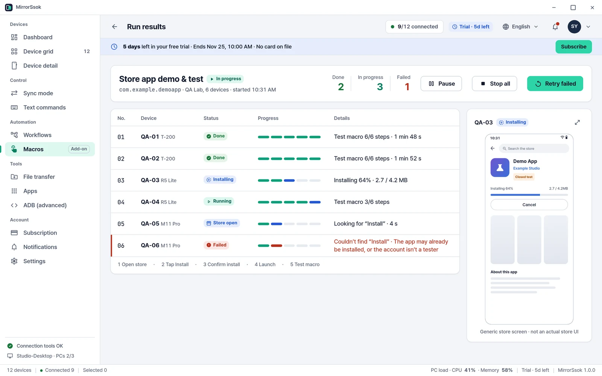

App QA and demos
Run the same scenario
on many models at once
Line up phones with different screen sizes and Android versions, then launch and drive your app with the same steps. Each phone’s results are logged step by step, and you can rerun only the phones that failed.
- Turn repeated checks into one-click workflows and macros
- Per-phone results with screenshots of failed steps
- Store app demo & test pack: install a test app → launch → run a test macro
Store app demo & test pack · Only for testing and demoing your own apps or apps you are authorized to use
